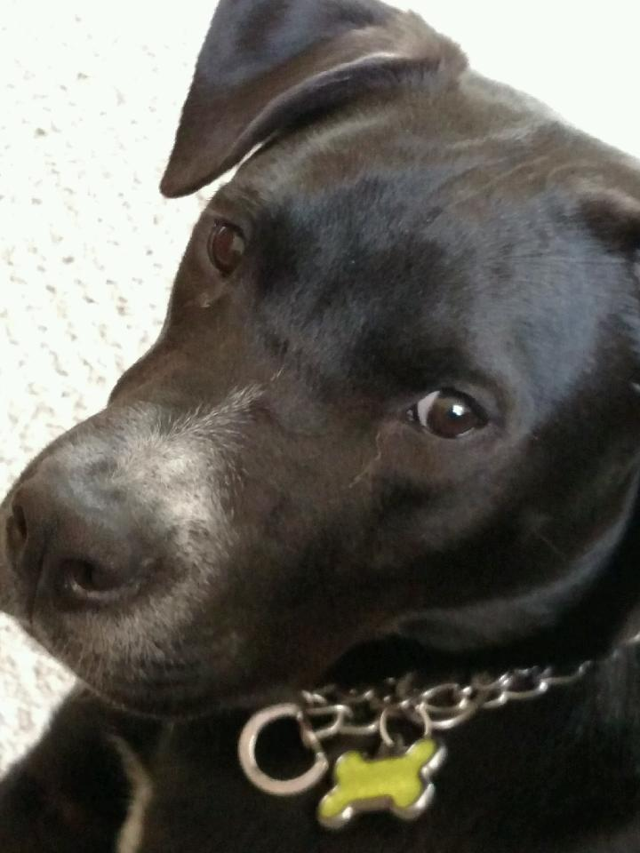

A Happy Thanksgiving Holiday
By Nick Sum
11/29/23

I spent a great Thanksgiving holiday with my family--Mom, Dad and our dog, Jack. We ordered dinner from one of our favorite Italian restaurants, Maggiano's, in Oak Brook, IL.
We started as I said grace and we all shared something for which we were grateful. Our feast included ham, fish, turkey, two pastas (spaghetti and meatballs and ravioli), and multiple side dishes. We ate until we could eat no more, except for the pumpkin cheesecake dessert. We enjoyed red wine and sparkling cider through the evening.
This tradition started during the height of the pandemic, and because I do not like turkey. We ordered a few dishes from Maggiano's and went to pick it up curbside. We popped the trunk and the restaurant staff loaded our order. When we got home and started bringing the food in, we realized it was not our order but actually The Bundle, with everything from appetizers to dessert. We called the restaurant and they told us to keep it and they would fix the other order. They did us a solid!
We all relaxed on the sofa and watched Netflix the rest of the night. The following day I went to my favorite game shop, Fair Game, and played Magic the Gathering with some old friends I had not seen in three months.
We are still feasting on our leftovers. Heading back to campus and reality tomorrow.
Meet My Dog, Jack
By Nick Sum
11/29/23

My dog Jack is 3 years old. My parents adopted him from a shelter that rescues pets from kill shelters. We think he is a Labrador-Pitbull mix, black with white markings. By the time he got to our home he was skin and bones, literally. After about a month his belly filled out, as we feed him really well.
Jack is now truly a member of our family. If he’s not running around the yard and rolling in the grass he’s begging for food like a gentleman at dinner, or just plain simple is guarding the house. Sometimes he takes that job a little too far and ends up in his crate. While I was home I saw what this was like first-hand. I counted the times he growled and scratched at the front window as people and other dogs went by:
Day Wednesday Thursday Friday Saturday
Times at Window 3 5 4 3
He also wears a correcting collar if this gets too out of hand. We may need to ask his vet what more we can do. But I think he guards us because he loves us and knows how nice his home is.
His hobbies are going for long walks, and like other dogs goes to nap later on the softest thing he can find. Those things are usually my bed or the upstairs couch. He has several toys and can do some tricks like sit and stay. My dad has also taught him to “talk” as he says “out” when he needs to go.
Jack is a great dog and has a special place in my heart.